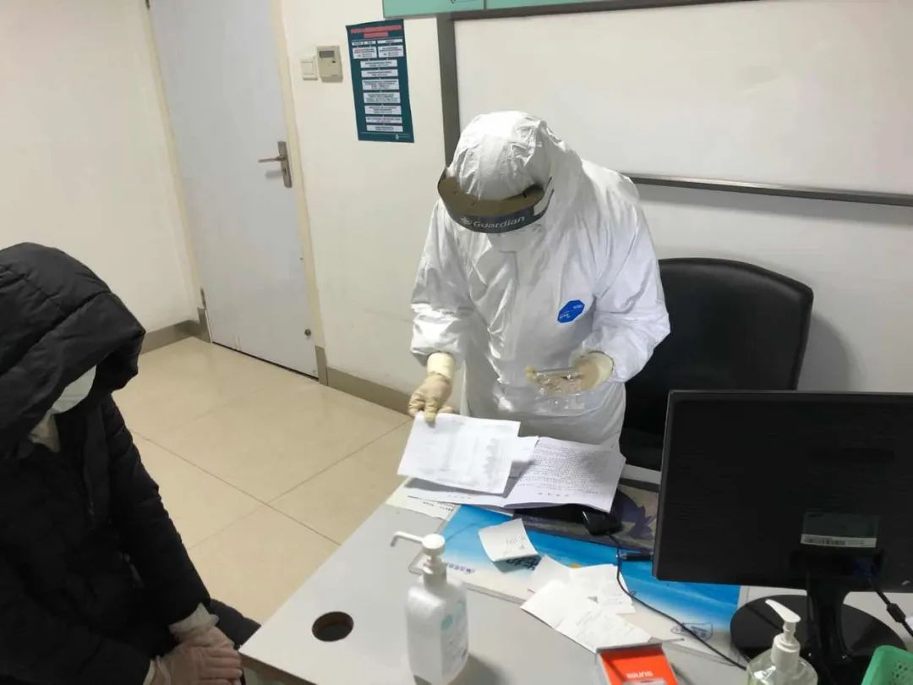

住在方舱的摄影师：这个照片今天在人民日报的首页登了
原文链接 备份链接 一场疫情，让小余一家分离三地。但他依旧认为，自己是不幸的人中，幸运的那个。作为婚纱摄影师的他，如今在方舱里给大家拍照片。他很高兴，“在这样很苦的事里，大家都能表现出一种乐观”。 文 | 吴美芬 小余今年30岁，是一位婚 …

新型冠状肺炎肆虐的当下，发热孕妇在孝感的处境很尴尬：妇产科不接收发热孕妇，发热门诊不接受孕妇，医院之间相互推脱，他们得不到治疗的机会。
文 | 吴美芬
1月22日，在武汉工作的邹杰（化名）和怀孕四个月的妻子，回到家乡孝感过春节。2月14日，妻子突然发烧，接下来五天，他们在孝感各个医院的妇产科和发热门诊来回转了两三轮。
2月17日，我联系上邹杰时，他们正在孝感中心医院做检查，医生建议他们做CT扫描以便确诊是否受到新型冠状病毒感染，但CT扫描可能会造成胎儿畸形，邹杰夫妇陷入两难境地。
我问邹杰，为什么不选择做核酸检测。他说当时核酸试剂紧缺，而且当地医院的确诊流程必须是先有CT结果才能做核酸检测。很无奈，2月19日，邹杰夫妇只好选择回家隔离观察。也是这天，他接受了我的采访。
以下是邹杰的自述：
**情人节当晚
**
我怀孕的太太被送往隔离点
2月14日，情人节那天晚上，我老婆突然高烧39度。因为她现在怀孕18周，突然发烧让我有点着急，就赶紧送她去孝感市三江航天医院。
我们去的是发热门诊，到了之后，工作人员首先是询问我们的一些基本情况。他们一听说我们是孕妇发热，直接说：“我们这里不接受孕妇”。接着我们又去了孝感市第一医院，还是不收。我问他们，哪里接受呢？他们回答说孝感市中心医院，那里是新冠肺炎定点医院。
然后我们就开车去中心医院，可中心医院说他们不接收孕妇，让我们去妇幼医院。医院之间推来推去的，我有点烦。没办法，还是开车去妇幼医院试试，到那已经是晚上八点多，我老婆依然高烧不退，饭也没吃。
妻子坐在孝感市中心医院等沟通的结果
妇幼医院的医生一听说我老婆在发烧，直接说：“这里不接收发热人群”。我实在没地方去了，就请求她帮我们看一下。医生给我老婆测了体温。测完体温，也没做其他的检查，说是没办法做，连血检都做不了，因为他们无法治疗发热人群。我说不给做检查，给点药吃可以吗？医生说他帮我们联系一下，就打电话去了。
那天晚上下着雨，气温比较低，老婆发着高烧，我很焦急。医生打完电话后跟我们说，希望我们去隔离，隔离点那边可能会有医护人员。我听后觉得不放心，便继续恳求，能不能先做个检查，让我知道是什么情况，心里有个定心丸。
医生坚持说做不了，必须去隔离点。
没办法，国家政策规定，我们作为公民不执行也没办法。既然这样，我就想着我们先回家吃饭再过去。可那个医生说，不行，隔离点有饭吃，现在就要直接过去。
到了隔离点，我不能进去，我老婆一个人进去了。她住进去后，发现这是一个征用当地企业宿舍的临时隔离点，里面没有医护人员，没有吃的，也没有人管，只是每个房间放了些基本的生活用品。
老婆给我反应这个情况后，我很崩溃。妇幼医院的医生明知道我老婆发烧，也没想过有什么办法可以让她退烧。他作为医生最起码知道发烧对孕妇有多大的影响，对胎儿有多大的影响。不但没有药，连最起码的物理降温都没做，直接就把我们丢到隔离点了，我觉得这个事情对任何正常人来说都受不了。
很庆幸，我老婆在隔离点待了一晚上，虽然天气很冷，但第二天早上体温回复正常了。
“烫手山芋”
早上，妇幼医院的医生联系了我，让我到妇幼医院开证明，拿着证明去隔离点接人，再来妇幼医院看病。可我到医院时，另一个负责的主任却说医院开不了证明，让我去隔离点问清楚手续，然后医院再跟隔离点沟通。我当时有点蒙，这个事情不应该是医院与隔离点之间沟通吗？为什么需要我去呢？

2月15日，邹杰拍的孝感市妇幼医院
那时孝感的城市道路已经封闭了，路上有交警把守，我没法开车出去。医生建议我去社区开证明，有了证明就可以通过交警的关卡，那时我很着急，就按照他们说的方法去社区开了证明，自己开车去了隔离点。隔离点的工作人员告诉我说需要当地卫生院的领导同意，才能把我的老婆接出来。我就又联系了妇幼医院的那个医生。
这个医生为这个事情忙活了一上午，不断地帮我们沟通，看得出来她也很想帮我们，但也只是停留在沟通上，没什么有效的解决办法。1个多小时后，来了一个120救护车。我以为救护车是送我们到妇幼医院，最后发现他把我们送到了孝感市第一医院。
孝感第一医院的医生接收后懵逼了，他们说怎么这个孕妇又来了，当时不是拒绝过了吗，怎么又来了呢。医院之间接收病人都是很混乱的，皮球相互踢来踢去的。
没办法，我求他们至少帮我们检查一下。医务组帮我们做了个血检。2月15日中午，我们做了第一次血检，血检结果显示白细胞很高，情况比较糟糕，医生初步判断可能是细菌感染。建议我们做CT扫描，以便进一步的检查确认。
我们都知道孕妇做CT扫描风险太高，可能会导致胎儿畸形。我和老婆都不同意做CT。我们是情愿自己感染了新冠肺炎，也不情愿承担将来孩子出生可能是畸形的风险。可医生说不做CT确诊不了，只好建议我们转院，去航天医院或者妇幼医院看看有没有办法。
她的这个建议其实是没有意义的，因为我们已经跑过那些医院了。我希望她可以帮我们跟那些医院沟通联系好，我们再过去。要不然他们不收，皮球又踢来踢去。
医生说跟领导反馈一下，就没有下文了。
一天折腾下来，我们都没吃饭。最后我们跟医生说，能不能给我们一些退烧药，我们回家吃饭先观察一下。
回家之后，我们用冰块和冷毛巾做了物理降温。之后几天，我老婆白天不会发烧，但到了下午体温就会升高，到了晚上会到37.5度以上。
2月18日，我老婆已经连续发烧五天了，我觉得不能再拖下去，就打电话给96120，他们帮我联系当地的卫生院。但卫生院说没有条件给孕妇做相关检查，让我们去中心医院或者妇幼医院。
我感觉整个流程特别繁琐，就问120原因。120说他们按照片区管理的，这个社区对应的医院是卫生院，所以120只能把我们送到卫生院，而卫生院没有条件收发热的孕妇，这样的话，120就无法送我们了。
当时，我感到很愤怒，难道已经受感染的几万人里就没有孕妇吗？难道说孕妇发烧就该死吗？
在这样情况下，没办法，我们只能是靠自己交际圈的能力去联系医院。那天我们又跑了航天医院，还是同样推脱，说没有条件收，特殊时期必须要按照程序来。
妇产科不收是因为发热了，发热门诊不收是因为孕妇。
最后120帮我们联系航天医院，航天医院给我们帮忙联系到了中心医院。
到了中心医院后，医生花5分钟为我们做了情况登记，并了解个人病史。大概1个小时之后，他们给我们的建议就是一定要做CT扫描。
真的很头疼，我们不可能接受CT扫描。现在就希望可以退烧，吃点消炎药。我们也知道吃消炎药、打点滴对胎儿有影响，但CT辐射影响太大了。
平时没有新冠病毒，并不是所有的孕妇发热都要做CT的。医生什么检查都没给我们做，就往这上面扯。医生听了我的理论，无话可说，就说给我们做一个初步的血液检查。
我问过医生能不能直接做核酸检测，医院都说不可以，要先做CT才能做核酸检测。如果能够给我们做一个核酸检测，我觉得会更保险些。

2月18日，中心人民医院的医生帮忙做检查
万幸，血检结果显示除了淋巴细胞偏低，我老婆各项指标正常。最后医生给我们开了两盒头孢，让我们回家隔离。

孝感市中心医院留观室
期间政府每个部门都只想着把自己的事情解决好，不断地向我了解情况，但只限于流程和沟通，没有实际的行动解决问题。但病患的病情不断恶化，救治刻不容缓。
我希望在这样特殊的时期，孝感相关部门可以针对特殊人群采取特殊措施和手段，保障特殊人群的就医问题，不要一刀切，不考虑实际情况。
家人都被送往隔离点
虽然基本排除了是新型冠状病毒感染的可能，但社区的工作人员还是让我们去强制隔离。考虑到我老婆是孕妇，他们允许我留在家里照顾她，我把父母和妹妹安排去了隔离点。
说实话，把我家里没有症状的正常人安排到隔离点，我有点接受不了。因为隔离酒店的环境很糟糕，特别不卫生，马桶上有污渍、床上有头发和烟头，很明显没有经过清洁消毒。
让我更愤怒的是，这个隔离酒店什么人都有。住过发热和高度疑似病人，卫生条件还这么差，这比我们出门受感染的风险还要高。让我家的老人住在那里14天，如果出了事，谁负责呢？
既然政府强制要求我们去隔离点，我们会配合。但最起码政府要有能力承担起隔离的责任，把工作做好。那个环境是不让人信服的环境。
从我一个普通人的亲身经历来看，当地政府在这次疫情防控中办事的能力和逻辑不符合常识，有种自己糊弄自己的形式主义在里面，隔离没有起到隔离的作用。
2月22日下午五点钟，我为老婆测体温时，发现她又发烧了。我就联系了社区的负责人，社区安排送我们去卫生院，我觉得这个时候去卫生院不合适，因为之前去过卫生院，他们说没有医疗条件来为做检测或治疗。但社区执意让我们去，就在去卫生院的路上，我老婆高烧不断，还出现了颤抖、昏厥的症状。
5点45分，我们到了卫生院，当时医生开始测体温，我说人现在非常的不行了，要昏了。医生却说他没办法，帮我联系96120。我说这不是没有意义吗？把人拖过来在这里耗着。医生回应说他们也是按程序来办事。
他们按程序办事儿，可病人等不起呀，在等待的期间我的老婆开始呕吐了。吐了三次，最高体温去到39.3度，中间也做了一个血检，结果不是很好，免疫细胞基本为零，是病危的人。
那个医生跟我说，现在不是新冠肺炎的问题，也不是保大人还是保小孩的问题了，现在大人和小孩都会出现生命危险。
卫生院帮我们联系了车子，一直等到八点钟，他们说把我们送到区的妇幼医院。我比较担心区的妇幼医院不肯接收我们，因为之前就是这样。我就又联系社区的负责人，社区说到了妇幼医院再说，如果妇幼医院再不接收，他们再想办法。
我觉得很可笑，只是走一个流程而已。如果人去那边白等两个小时，岂不是拿生命当儿戏。
很庆幸的是这个救护车是从中心医院过来的，他们说如果妇幼医院不接收的话，他们可以到中心医院去。
最后我们就到了中心医院做检查，结果非常糟糕，人非常危险，没有免疫力。当天我们一直在外面等结果，医院说今天必须要做CT检查了。我希望他们尽快解决我老婆高烧的问题。但一直断断续续地进行各种检查，一直等到十一点多才住院。
老婆住下后，我想回家弄点吃，但没有车，只好步行14公里回去。凌晨2点半开车回到了医院，准备给她做CT扫描。CT扫描结果排除了我老婆患的是新冠肺炎。

2月23日零点，邹杰步行回家的路上空荡荡的
从14日到现在，我每天都会接到市防疫、区防疫、社区防疫、120等各个部门的问询电话，但我觉得作用不大。打电话不能治病，打电话也不能退烧，不能解决病人治疗的问题。
到最后，我们做了各种该做的检查，CT也做了，但发烧的问题也没得到治疗。我现在不知道宝宝以后会有什么问题，身体又会有怎样的隐患。
「相关文章」
**「征集活动」
**
无论你是医护人员、患者，还是普通人
都可以点击“阅读原文”和我们联系
分享你与疫情的故事

「联系我们」
欢迎关心武汉疫情和“云林街十七号”的你
进入我们的微信群
后台留言“进群”
加志愿者微信
原文链接 备份链接 一场疫情，让小余一家分离三地。但他依旧认为，自己是不幸的人中，幸运的那个。作为婚纱摄影师的他，如今在方舱里给大家拍照片。他很高兴，“在这样很苦的事里，大家都能表现出一种乐观”。 文 | 吴美芬 小余今年30岁，是一位婚 …
原文链接 备份链接 2月14日晚上十一点多，高师傅和其他五位护工终于不再无“家”可归。 曾经的“家”是在医院，他们所照顾的病人病床旁的折叠床上。作为武汉中心医院南京路院区的一名护工，高师傅一天24小时都在医院。春节那三天会有三倍工资，所以 …
原文链接 备份链接 编者按 《口述实录 | 快递小哥搞定金银潭医护难题：我送的不是快递，是救命的人啊！》一文在网上引发关注后，热心读者纷纷给周刊提供线索。其中，一篇发表于宽带山论坛的帖子引起了我们的注意。和快递小哥一样，来自上海的“80 …
原文链接 备份链接 2月10日凌晨，爷爷头七那天，我在隔离酒店给他点了三根烟，磕了三个头，求他在天之灵保护他深爱的奶奶。 文 | 吴美芬 大黄，是武汉当地一支乐队的乐手，今年26岁。爸爸妈妈因病走得早，他自小在爷爷奶奶身边长大。1月底，爷 …
原文链接 备份链接 凤凰新闻客户端 凤凰网在人间工作室出品 1月22日，有一个叫卓明灾害信息服务中心的团队成立了nCoV志愿者联盟，发起人是我的朋友。 在这个大志愿者联盟里，有300多个在线医生，组成了一个综合各科在线治疗的团队；微信 …